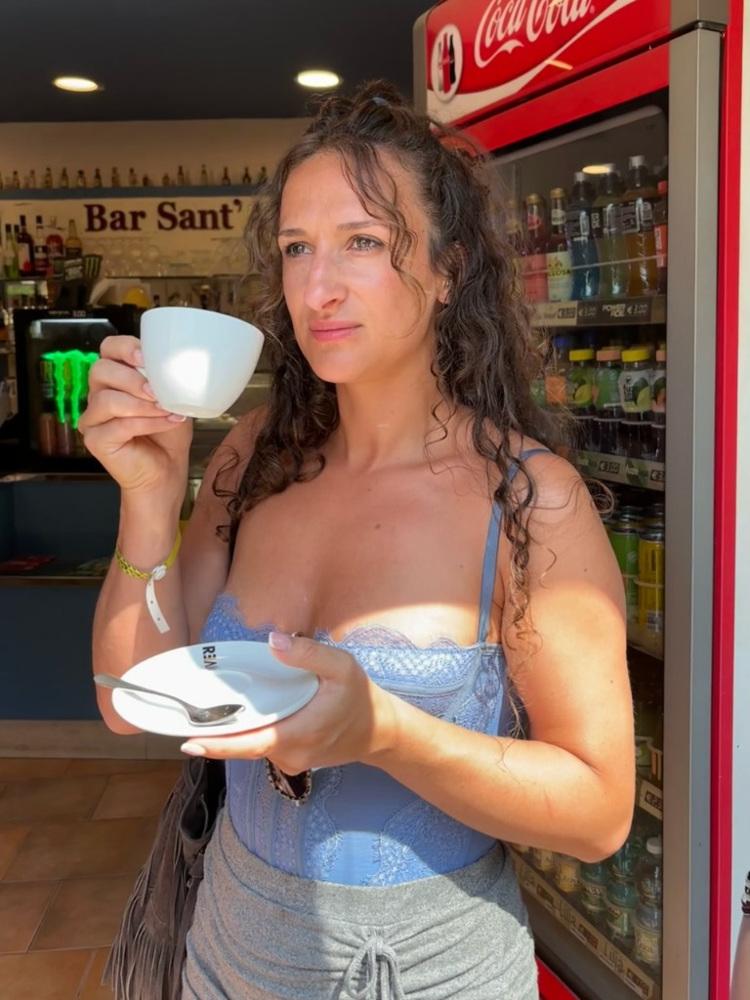

Odbuduj bliskość, na nowo usłyszcie swoje potrzeby.
Bezpieczna przestrzeń bez oceniania, w której pomagam małżeństwom i partnerom przejść przez kryzysy, na nowo rozbudzić pożądanie i odnaleźć głęboką intymność na każdym etapie wspólnej drogi.

Obszary Wsparcia Relacji
Prowadzę spotkania w bezpiecznej, wolnej od oceniania atmosferze. Każda sesja to krok w stronę wzajemnego zrozumienia.
Terapie dla par
Pomagam partnerom zidentyfikować destrukcyjne wzorce komunikacji, odbudować zaufanie po kryzysach i przepracować trudne emocje, które oddalają Was od siebie na co dzień. Szukamy bezpiecznej drogi powrotu do bliskości.
coaching intymności
Wspieram w przezwyciężaniu barier intymnych, dysharmonii seksualnej oraz braku pożądania w związku. Tworzę przestrzeń do otwartego, pełnego akceptacji i wolnego od oceniania dialogu o seksualności.
Coaching dla par
Dla relacji, które pragną świadomie się rozwijać. Pomagam budować wspólną wizję przyszłości, definiować cele i wartości, oraz wdrażać codzienne nawyki wzmacniające zaufanie, więź i intymność.
Edukacja o relacjach w nowym wymiarze
Wierzę, że o intymności i małżeństwie można mówić lekko, merytorycznie i bez tabu. Moja działalność w mediach społecznościowych to nie tylko liczby – to tysiące uratowanych rozmów wieczornych i par, które na nowo zaczęły ze sobą rozmawiać.
Tworzę krótkie wideo edukacyjne skupione na komunikacji, bliskości fizycznej oraz psychologii związków. Moja wiralowa rolka o dynamice relacji małżeńskich stała się fenomenem, docierając do gigantycznego grona odbiorców w Polsce.
Zobacz najpopularniejsze materiały
Historie z gabinetu
O mnie
Jestem terapeutą dla par, coach intymnościiem i doradcą relacyjnym. Moim celem jest pomoc partnerom w tworzeniu zdrowych, świadomych i bezpiecznych relacji, w których oboje czują się ważni i wysłuchani.
W swojej pracy integruję rzetelną wiedzę coach intymnościiczną z empatią i praktycznym, coachingowym podejściem. Wierzę, że kryzys w związku jest naturalnym etapem, który odpowiednio przepracowany może doprowadzić do głębszego porozumienia i odbudowy intymności.
Równolegle edukuję w mediach społecznościowych. Moje materiały wideo na TikToku i Instagramie dotyczące relacji i coach intymnościii zyskały ogromną popularność, generując miliony zasięgu i pomagając parom w codziennym dbaniu o związek.
Umów konsultację online
Esencja Wiedzy Relacyjnej dla Par i Małżeństw
Krótkie, niezwykle praktyczne przewodniki cyfrowe zawierające kluczowe myśli autorskie, diagnozę schematów oraz zbiór konkretnych pytań refleksyjnych do przeprowadzania szczerych rozmów we dwoje.
Najpierw budujemy wspólne życie. Potem zapominamy budować związek.
Dowiedz się, dlaczego bliskość i pożądanie znikają w prozie dnia codziennego oraz jak dzięki drobnym zmianom w komunikacji odbudować pierwszą iskry w relacji.
W środku przeczytasz m.in.:
- ✦ Jak nie stać się wspólnikami firmy „Dom”
- ✦ Pułapka „Przecież ja się tak staram!”
- ✦ Proste nawyki powrotu do czułości

Partner czy dzieci?
Jak nie zgubić dwójki w rodzinie. Jak nie zgubić relacji partnerskiej w prozie codzienności i dać dzieciom prawdziwe bezpieczeństwo.
- ✓ Rozważania nad odwróconą hierarchią w rodzinie
- ✓ Dlaczego zaangażowanie to decyzja, nie przypadek
- ✓ 10 pytań refleksyjnych dla małżeństw

Bliskość i Namiętność po latach
Jak znów chcieć — i być chcianym. Jak odbudować pożądanie i bezpiecznie rozmawiać o potrzebach bez wstydu i tabu.
- ✓ Seks jako barometr emocjonalny związku
- ✓ Mit „nowego modelu" a prawda o zaangażowaniu
- ✓ Praktyczne ćwiczenia budowania dotyku

Trudne Rozmowy
Jak słuchać, mówić i zostać razem. Nauka dialogu o emocjach, stawiania granic oraz przepracowania cichych dni i kryzysów.
- ✓ Odczytywanie schematów z domu rodzinnego
- ✓ Nazywanie swoich potrzeb bez ucieczki w złość
- ✓ Przewodnik wyjścia z cichych dni
Zbierz Wszystkie 3 Skondensowane E-Booki w Jednym Pakiecie
Otrzymaj pełną serię 3 praktycznych przewodników cyfrowych z zestawami pytań dla par. Oszczędzasz 15 PLN kupując w komplecie.
Rozpocznij zmianę w relacji
Napisz do mnie, aby umówić się na sesję online (terapię par lub konsultację coach intymnościiczną). Odpowiadam w ciągu 24 godzin, gwarantując pełną poufność.